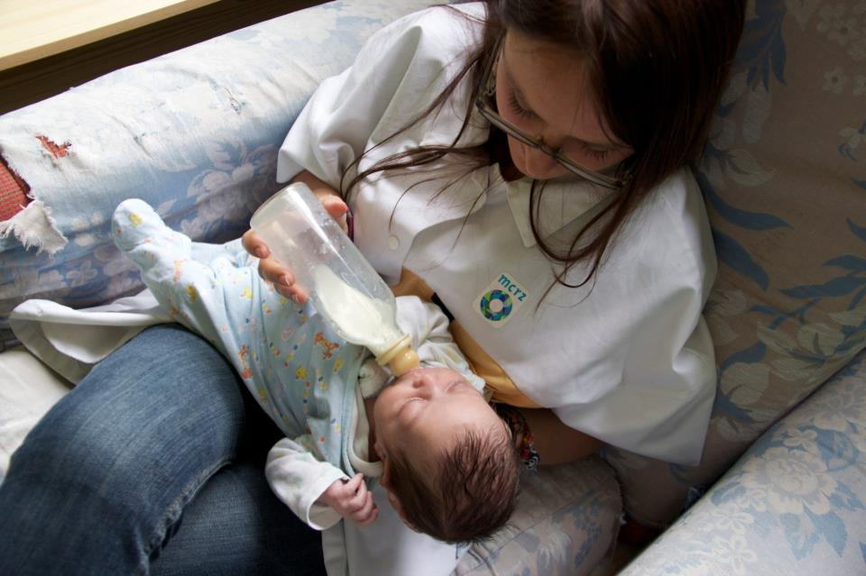

PREGNANT! I took 6 pregnancy tests, just to be sure. I even insured I took one that said those words right across the front: Pregnant, I was pregnant.
The baby would be due Christmas, our perfect Christmas baby. I knit a red and white Santa pompom hat to surprise my husband, with the test on top. We laughed, we cried and we couldn’t be more excited.

Deep down I was terrified. My body had failed me so many times before, how could I be sure it wouldn’t fail me again.
When it comes to my health, I’m a rare statistic. No number can be put to a 4th grader who ends up in the hospital for several days due to an infection from a guinea pig bite, or a woman who would have a cyst so large she would lose an ovary, and that the same woman would battle Salmonella after eating in a Filipino garbage dump. But in the last year I’ve been facing the ultimate trial of all, a body that rejects food, a disease labeled Gastroparesis.
So while I could handle all of those things happening to ME, I dreaded anything bad happening to my baby. Statistics would say that 1 in 4 pregnancies end in miscarriage, a statistic that overwhelmed me. If I was that .00001% of course I would be that 25%.
But we prayed. We prayed for strength, for comfort, for peace and Jesus provided all of those things.
CC Image by Luciano Belviso
After a couple of warning signs, our doctor ordered HCG testing. He came in and immediately began throwing around words like “not a viable pregnancy” and “spontaneous abortion”. But we continued to pray for a miracle.
He said we could do an ultrasound just to make sure but that it would be a MIRACLE to see a heartbeat.
We went ahead with the ultrasound and we prayed for a miracle, the miracle of life, the miracle of that little bitty beating heart. And there it was on that screen. Our precious baby's heart beat. We cried, we praised God for our miracle baby.
Two weeks later, our baby went to be with Jesus.
We were out in Annapolis at Kat’s wedding, one of the women I had traveled the world with as a missionary years earlier. It was there, surrounded by the women who had so passionately prayed for my future husband, for my future babies, for God’s will to be done in my life, that we lost our baby.
It was the most difficult night of my life. Laboring in that hotel room, only to know my baby was already gone. I would never get to look upon their beautiful face. I would never see my husband hold his baby for the first time. Watch them grow up. Teach them about how much Jesus loves them. How much we loved them.
The week that followed wasn’t any easier. I was in pain; physical and emotional. But the pain I hated the most was my anger. Angry at those who already had children when I couldn’t even have one, angry at my body, angry at the brokenness of this world, angry that even though we wanted to adopt doing that seemed an impossible and expensive endeavor.
And I questioned. Why me? Why my baby? Haven’t I already faced enough? And the classic question: how can there be so many unwanted babies in this world, babies I’ve held, babies I know by name and it is our baby that is taken too early.

I may never know the answers to those questions this side of heaven but what I do know is God is good. He is not a God of death but of life. Not a God who brings sorrow or pain but who brings joy and goodness. He hates that I lost my baby more than I do.
And He loves that baby more than I can ever imagine.
But sadly we live in this broken world. A world filled with death, filled with injustice, filled with pain. And it is in this world that God promises to walk beside us, to feel our pain, to mourn with us.
These are not just empty promises. Jesus was in the same garden of despair I’m facing and He questioned, He grieved deeply. “My soul is crushed to the point of death” (Mark 14:34).
He was even anguished to the point of sweating blood. "He was in such agony that his sweat fell to the ground like great drops of blood" (Luke 22:44).
And while He is with us in our misery, He promises that one day "He will swallow up death forever... (and) wipe away all our tears" (Isaiah 25:8)
That one day we will dance in the shadow of the Almighty.
We may never get to know that baby's laugh, their smile or memorize their cute little face in this life on earth but Jesus promises that we will know them one day in Heaven, and THAT is something I am sure of.